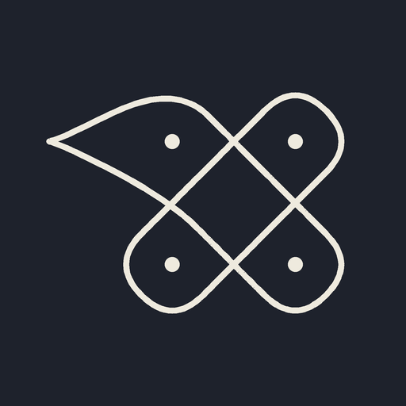

How Model A (“the writer”) turns an image into an encoding, one token at a time — watched on a real 2×2 kolam, with the repo's own renderer.
Two inputs, one output, and a loop that repeats until the model says it is done.
That loop is the whole of Model A. Everything else in this lesson zooms into one box of it — and later lessons open attention (box ②), the block (all three), training, and Model B, which keeps the same attention but skips the loop entirely.
The decoder is a tiny 11-word language model (“0”–“8”, “|”, <end>) that also gets to look at a picture. At each step, one token is written using two looks.
Each token can look at the tokens before it — nothing further right. A mask blocks the future, so a token can never peek at an answer it hasn't written. This is plain GPT behaviour.
Each position knows where in the encoding it is (row, column), so it can search the image patches under its own gap: is there a crossing here? a horn tip? a wall?
This is Model A's loop replayed on a genuine 2×2 label. Press next token (or the → key): the ring shows the gap being decided, chips get appended, badges appear on the picture.

Honest note: this replay already knows the true tokens — it shows the loop, not the prediction. Learning to predict them is what training does (lesson 5), and the “allowed” rules that stop impossible moves are lesson 6.
0–8, | (end of row), <end>.| and <end> were learned from data, not programmed:
the model figured out where rows end and where to stop.token_slots() — model.py:85 — reads (row, column) off the tokens written so far.SeqModel.memory() — model.py:111 — CNN → 576 patch vectors.SeqModel.logits() — model.py:116 — the decoder call; the causal mask is model.py:121.SeqModel.predict() — model.py:131 — the loop you just watched, with allowed_next.Next: Lesson 2 — attention by hand. We'll open box ① and ② and compute Q, K, V and the softmax with pocket-sized numbers, until “attention” stops being a magic word. Ask in the chat to build it.